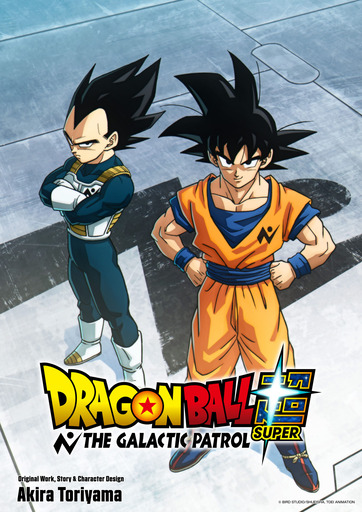
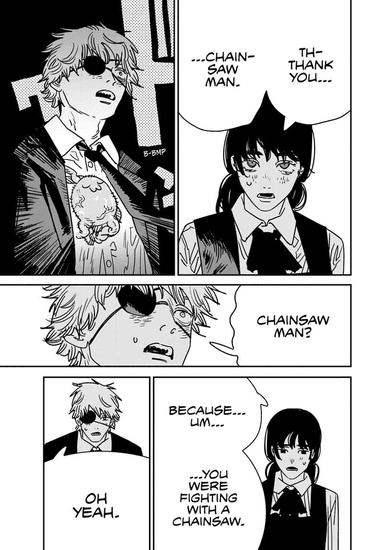

Favorite Manga
One of my favorite hobbies is reading manga.
I used to watch anime when I had free time and could watch an entire 12 episode series in 1 day.(How the times have changed!) Now that I have less time, reading has become one of my pastimes.
Why I Prefer Manga Over Anime(It Depends)
Anime and Manga are two different mediums that adapt the same story. However, it is normally that the manga is created first and is then adapted into an Anime by one of the major studios.
It is an adaption so the anime isn't 1 to 1 with the manga as some panels or even some chapters are skipped or are rearranged to fit with how the adaptation is done.
For me, I prefer reading manga as I am seeing and reading the mangaka's orginal artwork and story in the way they created it. There is more to the story that isn't adapted as anime is usually adapted to 12 or 24 weekly episode seasons, which take time to make.
I enjoy reading weekly or biweekly when new chapters are released but I'm also excited whenever a manga that I'm reading gets adapted into an anime as it means that that I'll get to see some of my favorite scenes animated.
Like I have in the parentheses, it really depends. I might get introduced into a series by an anime and then proceed to read the manga to read more of the story or I'm reading a series which still hasn't gotten adapted. Either way, I'm introduce to a great story.
Dragon Ball: My Favorite Manga
Dragon Ball, written by Akira Toriyama, was serialized in Weekly Shonen Jump from 1984 to 1995, a whole decade before I was even born.
So how did I get introduce to it? Well, I can't even remember myself, all I do remember was that I was already introduce to Dragon Ball when I was 3.
Luckily for me, I was born at the right time as Toriyama-Sensei wrote Dragon Ball Super in 2013 and thus a new wave of Dragon Ball story, games, merch, and manga was created
It will soon be 2 years since Akira Toriyama's death on March 1, 2024. His impact on the world can't be stated. While he won't be here for the adaptation, a new anime will adapt the remaining arcs of Dragon Ball Super soon.

Additional Series That I Enjoy
I consider Dragon Ball to me my number 1 series, but that doesn't mean that I ignore others. Below are a couple more series that I like.
- Jujutsu Kaisen by Akutami Gege
- Bocchi The Rock by Hamazi Aki
Honorable mention: Chainsawman
